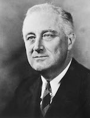

posted by Franklin Roosevelt
I am certain that my fellow Americans expect that on my induction into the Presidency I will address them with a candor and a decision which the present situation of our people impel. This is preeminently the time to speak the truth, the whole truth, frankly and boldly. Nor need we shrink from honestly facing conditions in our country today. This great Nation will endure as it has endured, will revive and will prosper. So, first of all, let me assert my firm belief that the only thing we have to fear is fear itself—nameless, unreasoning, unjustified terror which paralyzes needed efforts to convert retreat into advance. In every dark hour of our national life a leadership of frankness and vigor has met with that understanding and support of the people themselves which is essential to victory. I am convinced that you will again give that support to leadership in these critical days.
In such a spirit on my part and on yours we face our common difficulties. They concern, thank God, only material things. Values have shrunken to fantastic levels; taxes have risen; our ability to pay has fallen; government of all kinds is faced by serious curtailment of income; the means of exchange are frozen in the currents of trade; the withered leaves of industrial enterprise lie on every side; farmers find no markets for their produce; the savings of many years in thousands of families are gone.
